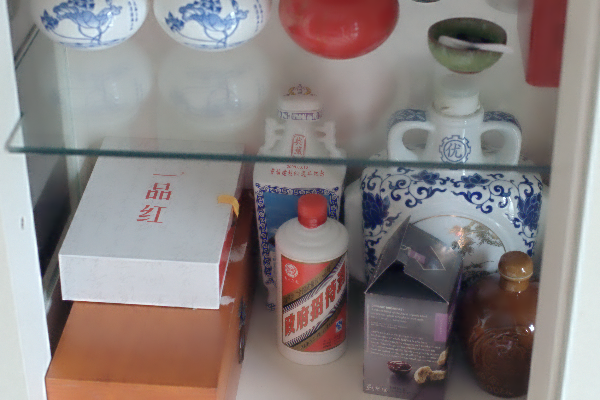
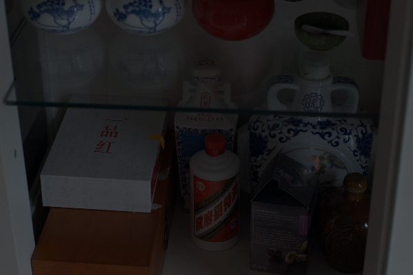
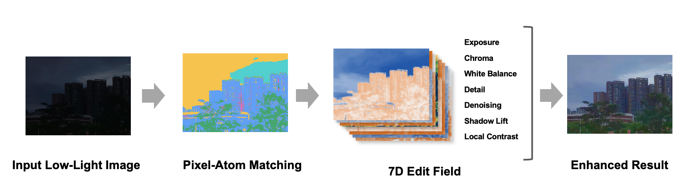
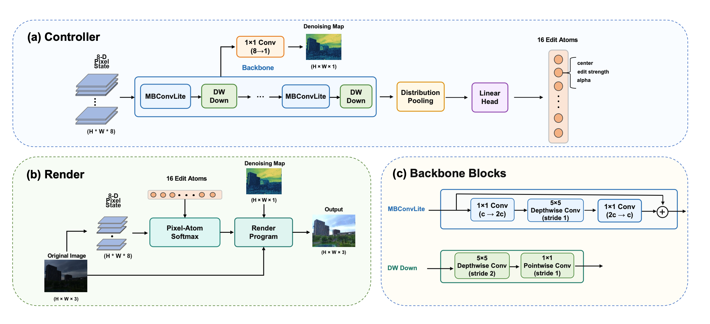
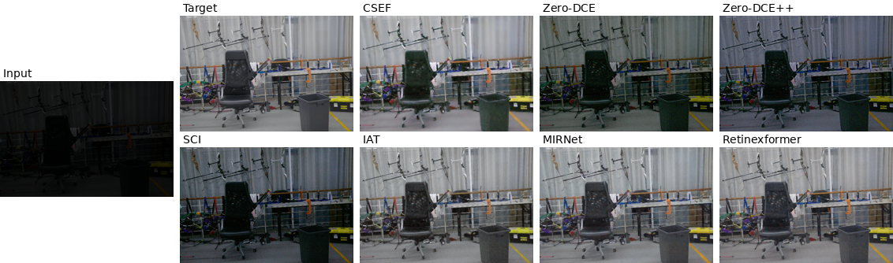
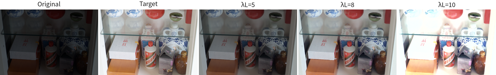
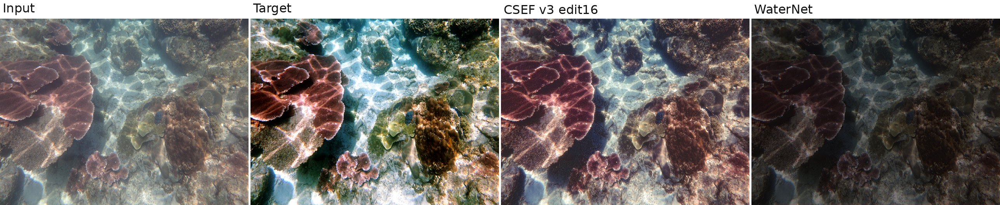
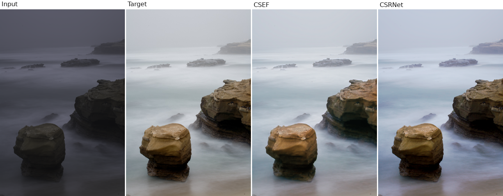

构建像素状态
提取 8 维状态，包含相对与绝对亮度、色度、梯度、局部对比度、纹理和噪声。
COMPUTER VISION / COURSE PROJECT
Conditional State Edit Field for Low-Light Image Enhancement
CSEF 用像素状态与可解释的编辑原子，构造逐像素编辑场。模型将亮度、色彩、白平衡、细节与降噪交给明确的渲染操作，而非直接生成整张 RGB 图像。


01 / PROJECT OVERVIEW
低照度图像往往同时存在曝光不足、颜色偏移、细节丢失与暗部噪声。CSEF 先描述每个像素的状态，再从图像中生成 16 个编辑原子，以软匹配方式组合成局部编辑参数。
这样，每个输出像素都能追溯到所匹配的原子与具体操作；在推理时，也可直接调节不同操作的强度。

论文图 1 · CSEF 的状态匹配与显式编辑流程
02 / THE METHOD
像素状态 → 原子匹配 → 编辑参数 → 图像操作 → 增强结果。控制器决定“编辑什么”，解析渲染器负责“怎样编辑”。
提取 8 维状态，包含相对与绝对亮度、色度、梯度、局部对比度、纹理和噪声。
轻量控制器通过分布池化提取图像上下文，预测 16 个带有状态中心与编辑幅度的原子。
每个像素按状态相似度匹配原子，合成为 7 维空间编辑场，适应不同区域的退化。
按编辑场执行曝光、色彩、白平衡、细节、降噪与阴影提升，输出增强图像。

03 / EVALUATION
以下数字取自论文表 1。对比涉及 LOL-v2 Real 与 Synthetic 两组数据；图像质量和推理速度应结合具体数据集一起阅读。
PSNR · 对比方法中最高
SSIM · 对比方法中最高
论文报告的推理速度
可训练参数量
在 LOL-v2 Synthetic 上，CSEF 的 PSNR、SSIM 和 MAE 均优于论文中列出的对比方法。在 LOL-v2 Real 上，MIRNet、Retinexformer 等模型的重建指标更高；CSEF 则保持较小的参数量与较高的推理速度。
| 方法 | Real PSNR ↑ | Syn. PSNR ↑ | Real FPS ↑ | 参数量 |
|---|---|---|---|---|
| CSEF | 20.4338 | 22.1841 | 143.46 | 124,257 |
| MIRNet | 28.0960 | 15.7555 | 1.35 | 31,787,419 |
| Retinexformer | 28.9768 | 16.1899 | 10.39 | 1,605,701 |
| Zero-DCE | 18.0588 | 17.7564 | 112.59 | 79,416 |
论文表 1 节选；完整 SSIM、MAE 与其他方法见论文 PDF。

论文图 3 · LOL-v2 视觉对比
04 / MORE THAN LOW LIGHT
论文进一步研究了推理时的参数可控性，以及向水下图像增强和颜色增强任务的迁移能力。

不重新训练模型，改变渲染系数即可得到不同的曝光与白平衡效果。

论文中，水下实验 PSNR 从原始输入的 17.7596 提升至 20.1732 dB。

调整编辑维度后，CSEF edit12 在颜色增强实验中取得 22.9149 dB PSNR。